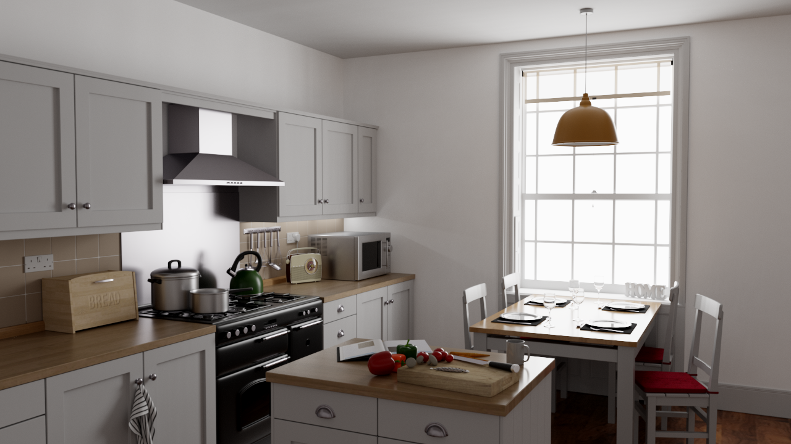
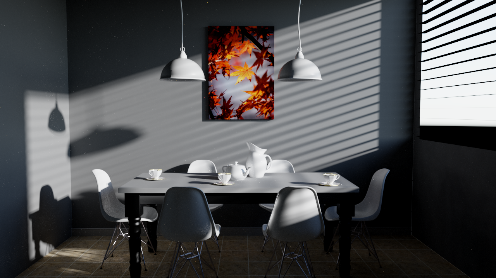
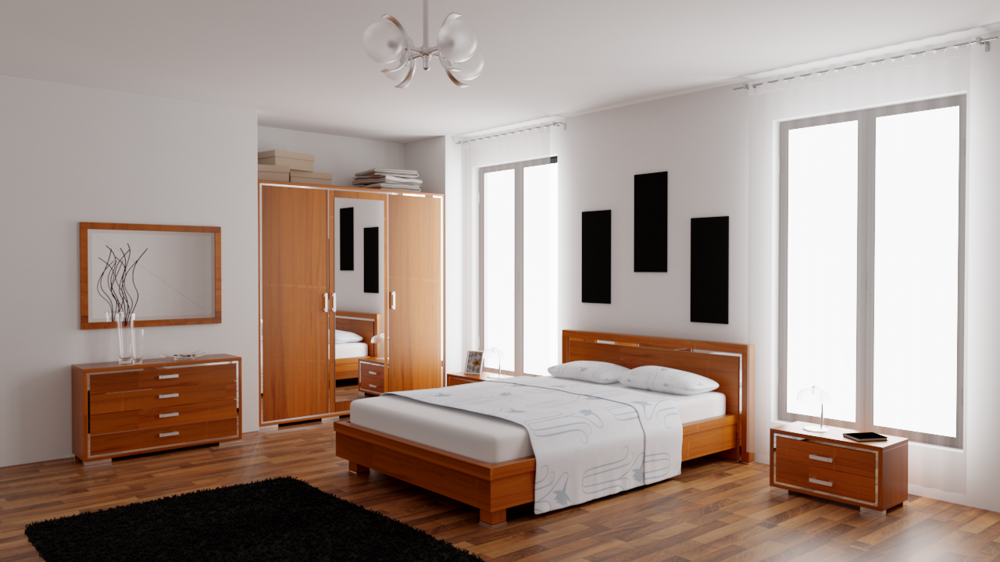

Corona Engine
做前沿技术的无畏探索者，也做每一颗创作灵感的引路星
告别传统繁杂的引擎面板，无论你是懂技术不懂美术，还是懂美术不懂代码，只需带上灵感，就能在这里轻松拼搭出心中的游戏世界。
用直观的逻辑模块代替生涩代码，所见即所得。
智能化辅助构建，大幅降低场景搭建的时间成本。
专为学生与初学者打造，让创意不再被技术壁垒阻挡。
为挑战游戏开发、影视制作等数字内容创作中的特殊需求而设计。提供极具深度的底层控制力，助力前沿学术探索与工业级图形技术突破。
已在异构编程语言领域取得实质性突破，释放极致算力。
深度集成并优化立体显示技术，赋能下一代视觉体验。
为 SIGGRAPH 等学术研究提供透明、可修改的底层 API。

硬件光追与光栅化双管线并行：硬件光线追踪实现物理级间接光照，光栅化路径以 RSM + SSR 提供高性能近似，在画质与帧率之间灵活取舍。

面向光场显示设备的实时渲染管线，无需佩戴任何设备即可呈现真实立体的裸眼 3D 画面，针对空间-角度-时间维度做稀疏重建优化。

多人实时协作的场景编辑能力，操作即时同步，团队可在同一场景中并行创作，像在线文档一样顺畅高效。
内置 AI 智能体：以自然语言驱动三维场景生成，并通过 MCP 协议直接操控与编排场景，让创作从「手动搭建」走向「对话生成」。
Vision 与 Cabbage 的初步融合
解决自研 GPU 编程语言架构难题，发表 SIGGRAPH ASIA。
核心算法与架构获得业界认可，具备应对真实场景的技术潜力。
深度重构，持续打磨，厚积薄发
以赛促研，持续打磨引擎完备性，稳步推进多项学科竞赛主办与命题工作。
围绕实时渲染、EDSL、裸眼3D等课题继续钻研，多篇顶会正在积极筹备中。
我们作为命题方之一参与其中——基于 Corona Engine 设计赛题，赛题细节正在与赛事组委会联合打磨中，将围绕引擎的渲染、物理、动画、场景生成等课题展开。
由我们发起并主办的省级赛事，探索渲染与创意的边界，赛事计划采用高强度的限时开发（Jam）赛制，并预设“互动游戏”与“影视短片”双并行赛道，核心主题与评测规则目前仍处于封存状态。
由我们主办的校内赛事，一场伴随倒计时的未知挑战，无论是打造硬核的游戏原型，还是制作概念视听短片，都将成为破局的钥匙，赛制细节与入场悬念即将解禁。
API & 图形学入门指南
预编译库与测试场景
赛事官方答疑与交流
Corona Engine V1.0 (内测版) - 支持全平台渲染